Lens prior matching with
latent diffusion models
SKACH winter meeting 2025
2024/27/01, ISSI Bern
 Philipp Denzel, Y. Billeter, F.-P. Schilling, E. Gavagnin @ ZHAW
Philipp Denzel, Y. Billeter, F.-P. Schilling, E. Gavagnin @ ZHAW
L. Stanic, G. Piccoli, T. Doucot, M. Bussmann, P. Saha @ UZH
SKACH winter meeting 2025
2024/27/01, ISSI Bern
Philipp Denzel, Y. Billeter, F.-P. Schilling, E. Gavagnin @ ZHAW
L. Stanic, G. Piccoli, T. Doucot, M. Bussmann, P. Saha @ UZH
Strong gravitational lens prior

Credits: NASA/ESA
Strong gravitational lens prior
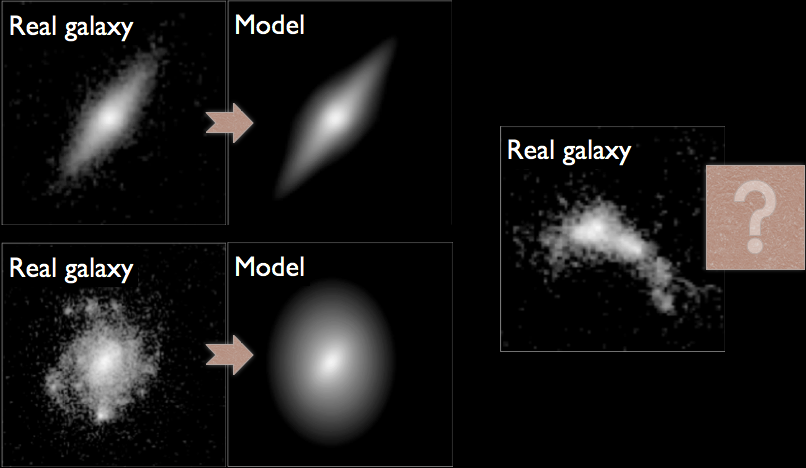
Figure 1: Mandelbaum et al. (2014)
Map-to-map translation

Figure 2: Denzel et al. (2025, in prep.)
Generative deep learning for galaxies
Deep generative models
Which generative model?
Latent diffusion
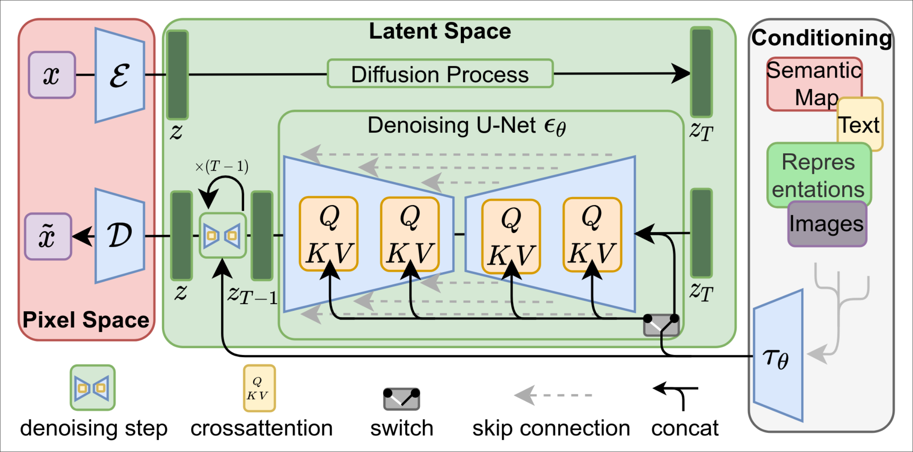
Figure 3: Latent diffusion by Rombach et al. (2022)
Key ingredient
Key ingredient
Regularization of the latent space
Regularization of the latent space
Diffusion
Current status
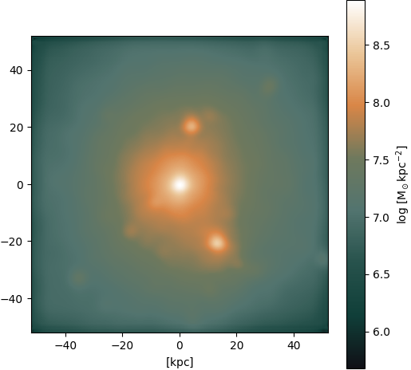
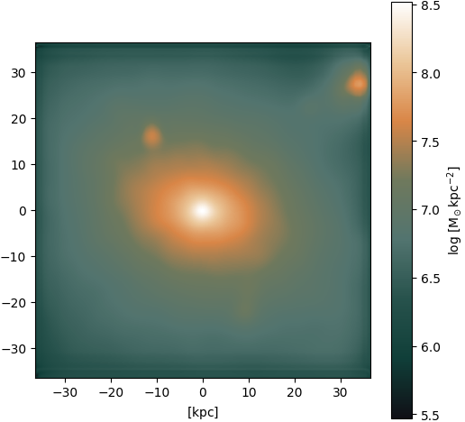
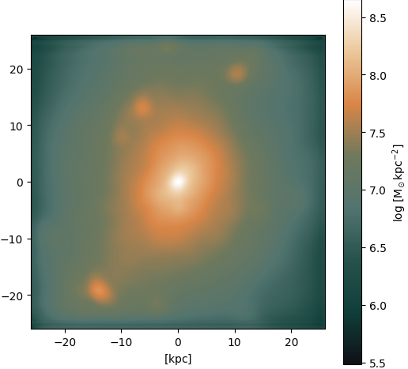
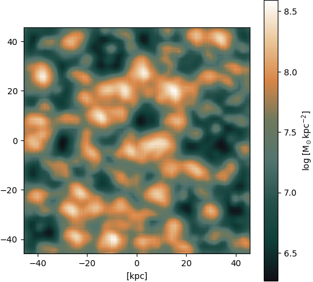
Application: Strong gravitational lensing
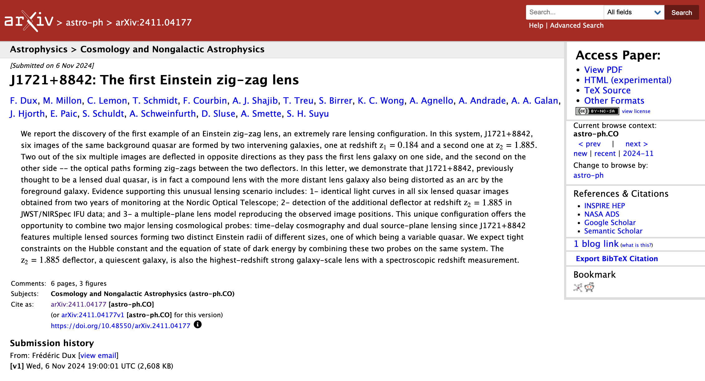
A lens with an interesting history
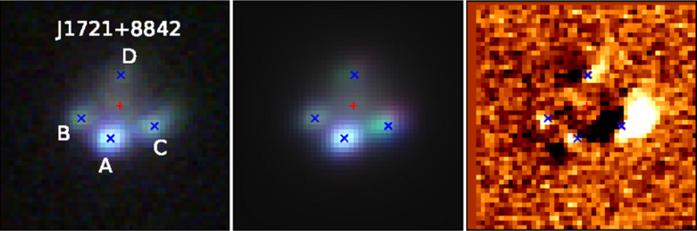
Lemon+ (2018)
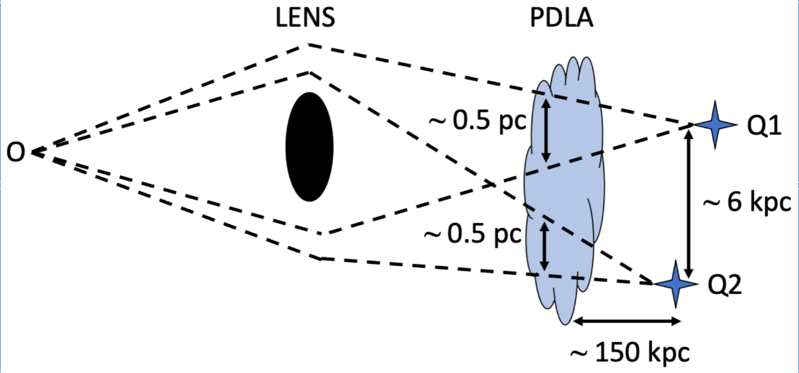
Lemon+ (2022)
Zig-zag lens
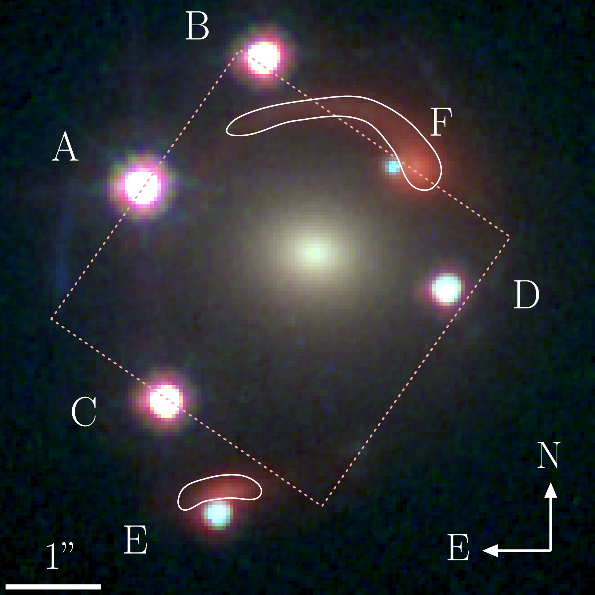
Figure 5: Dux et al. (2024)
Zig-zag lens
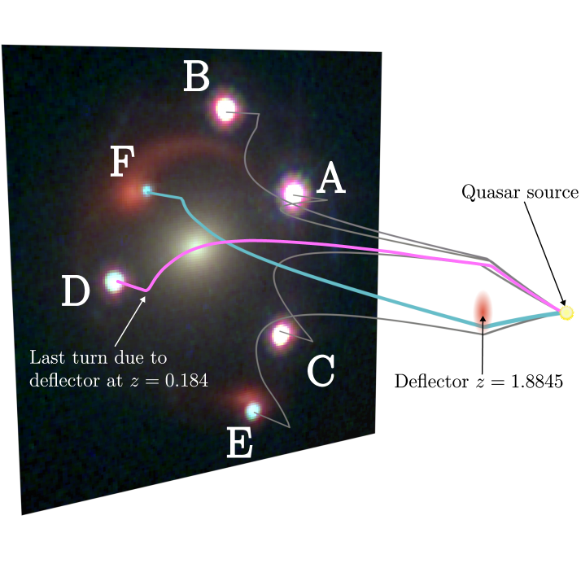
Figure 6: Dux et al. (2024)
Zig-zag lens model
\begin{equation}
\begin{aligned}
x_1 &= D_{01} \, \theta \\
x_2 &= D_{02} \, \theta - D_{12} \, \hat\alpha(x_1) \\
x_3 &= D_{03} \, \theta - D_{13} \, \hat\alpha(x_1)
- D_{23} \, \hat\alpha(x_2)
\end{aligned}
\end{equation}
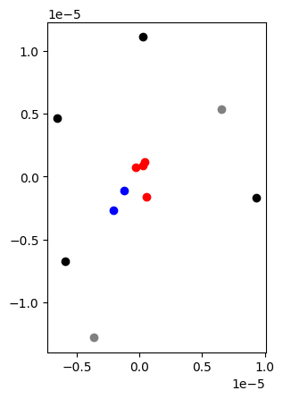
Summary: Importance for SKA?
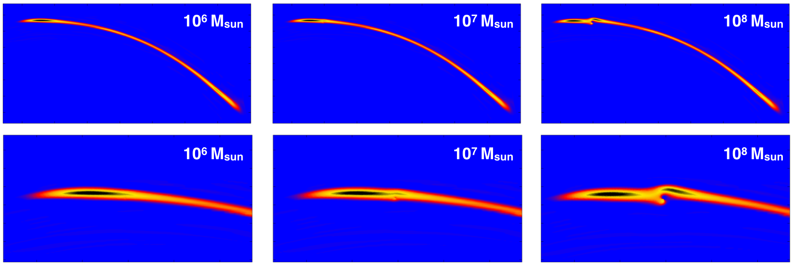 McKean et al. (2015)